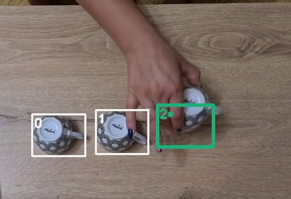

Verified-anchor grounding for Grounded VideoQA, walked through one case
This is the method behind the current Perception Test 2026 Task 2 submission, shown end to end on a single question rather than as a diagram. Every image below is the actual bytes a stage consumed, pulled from that stage's cache; every number is read from an artifact on disk. Nothing here is redrawn or retyped.
Where this lands
One version gained more than the previous twenty-five combined. The gain came from replacing the stage that decides which object the question is about, which had been frozen since the first version.
The defect this method fixes
A tracker is initialised from anchor boxes. Nobody had measured whether those boxes were on the right object, because the measurement is subtle: ground truth is annotated roughly once per second, so snapping it to the nearest annotated frame charges the object's real motion to the anchor, and interpolating it across a 30-frame gap adds its own error. Only anchors that land exactly on an annotated frame can be scored cleanly — and in the previous system just 29.2% of them did.
Scored that way on 700 held-out Valid questions, the previous system put 17.4% of its anchors on a completely different object, and for 25.9% of targets every single anchor was wrong. Those targets are unrecoverable: no tracker can fix a start that points at the wrong thing.
| Grounding | Targets all-wrong | Anchor wrong object | Anchor IoU ≥ 0.5 | On a scored frame | Anchors |
|---|---|---|---|---|---|
| v1 prompts, flash | 25.91% | 17.38% | 74.46% | 29.2% | 2,514 |
| v1 prompts, pro | 11.76% | 9.90% | 84.55% | 32.0% | 2,718 |
| v26 grounding | 6.70% | 7.33% | 87.29% | 99.2% | 8,121 |
The middle row matters for honesty: simply running the same prompts on a stronger model recovers most of the anchor-quality gap. The four-stage design adds the rest, plus almost all of the jump in anchors landing on a frame the evaluator actually scores.
The case: video_7110__q8
“The person uses multiple similar or identical objects to play an occlusion game. Track the object that occludes the smaller object.”
The video holds 3 objects annotated with the same label (cup), and the answer is exactly one of them: track id 2. Picking the wrong one costs the whole question. 21 frames are scored, out of 626.
Scan the whole video at 3 frames per second, and say when the deciding moment happens
These are frames from the cached 3 fps bank the first stage consumed — the complete view it had. It is asked for three things beyond a description: how many objects could be confused with the target, the shortest interval containing the evidence that singles the target out, and a rough position.


“The person lifts the rightmost cup, revealing a small red object, and then places the cup back down over it. This cup is the target.”
- look-alike instances
- 2 other objects could be confused with the target
- deciding event
- frames 220–240 — “the cup is lowered over the small red object”
A 3 fps view samples every 333 ms. That is enough to notice a cup being lowered, and not enough to be sure which cup — which is why the interval is reported rather than resolved here. Measured on the previous system, wrong anchors sit on frames where the target moves 5–27× faster than at correct ones.
Re-sample inside that interval at 12 frames per second, and resolve which one it is
Same frame budget, spent where the information is. These panels are cropped to the region the look-alikes occupy, and the boxes are ground truth added for the reader so the ambiguity is visible — the model saw the full frames with no boxes at all. The three objects are near-identical; only the event tells them apart.
id*the other same-label objects, labelled by id





“cup” — a phrase that fits all 3 of them equally
“the rightmost of the three identical cups, which is lifted to reveal a small red object and then placed back over it”
- instance evidence
- is the rightmost cup and is placed over the small red object
- identified
- yes
- trigger frames offered back
- [0, 90, 300] · quality good
A trigger frame is where the tracker will be initialised, so it is required to show the target complete, unoccluded, stationary, and separated from its look-alikes. A box that is correct but ambiguous propagates the wrong identity through the entire track.
Draw the box at original resolution, and only on frames the evaluator scores
Ground truth is annotated about every 30 frames and the official evaluator reads predictions only on annotated frames. The one box a model has directly confirmed is the most reliable box in the whole track, so it is placed where it can earn a true positive: the offered frames are restricted to that grid.

- frames offered
- [0, 30, 90, 120, 180, 240, 270, 330]
- anchors returned
- [0, 30, 90, 120, 180, 240, 270, 330]
- on a scored frame
- 8 of 8
- trigger used
- frame 0, attempt 1
The previous system placed its anchors at [0, 20, 100, 210, 230, 270, 300, 310] — freely chosen frames, most of which the evaluator never reads.
| Anchors | Placed | On a scored frame | Median IoU vs GT | Per-anchor IoU |
|---|---|---|---|---|
| this method | 8 | 8 | 0.882 | 0:0.95, 30:0.93, 90:0.95, 120:0.80, 180:0.68, 240:0.55, 270:0.91, 330:0.86 |
| previous system | 8 | 4 | 0.000 | 0:0.00, 210:0.00, 270:0.00, 300:0.00 |
Every one of the previous system's scorable anchors has IoU 0.000: it is not slightly off, it is on another object entirely.
Have a second, cheaper model check the pixels against the words
These are the exact images the verifier received — a zoomed crop with the proposed box drawn, plus one scene thumbnail. It sees no video, no reasoning, and no idea how the frame was chosen, so it cannot repeat the first model's mistake; it answers a different question, whether these pixels match this text. It never produces a box.
The box in these crops is drawn in the colour the production renderer uses, which is not this page's ground-truth green — these are unedited copies of what was sent, so the colour is left as it was.


- verdict
- 8 of 8 anchors accepted · tier
verified - verifier's own note
- “look-alike cups present”
Only “right object” can reject an anchor. The two geometry flags rank anchors but never delete one — an earlier version of this rule discarded 7 of 8 good anchors, because an axis-aligned box on a slanted object unavoidably encloses background, and because a box that spans a partly hidden object is correct here rather than incomplete. When look-alikes are present the verifier is explicitly told it cannot know which one this is from a single frame, and not to guess.
Propagate from the verified anchors, and score every annotated frame
SAM2.1 runs forwards and backwards from up to eight temporally spread verified anchors. Outlined panels are anchor frames; the rest are propagated. The previous system is on the wrong cup from the first frame to the last.

IoU this method 0.95 · previous 0.00

IoU this method 0.95 · previous 0.00

IoU this method 0.68 · previous 0.00

IoU this method 0.91 · previous 0.00

IoU this method 0.86 · previous 0.00

IoU this method 0.94 · previous 0.00

IoU this method 0.89 · previous 0.00

IoU this method 0.92 · previous 0.00
IoU against ground truth on every annotated frame. Larger dots are anchor frames. Hover a point for its value.
Table view
| Frame | This method | Previous system |
|---|---|---|
| 0 (anchor) | 0.950 | 0.000 |
| 30 (anchor) | 0.930 | 0.000 |
| 60 | 0.971 | 0.000 |
| 90 (anchor) | 0.954 | 0.000 |
| 120 (anchor) | 0.804 | 0.000 |
| 150 | 0.924 | 0.000 |
| 180 (anchor) | 0.675 | 0.000 |
| 210 | 0.829 | 0.000 |
| 240 (anchor) | 0.551 | 0.000 |
| 270 (anchor) | 0.907 | 0.000 |
| 300 | 0.967 | 0.000 |
| 330 (anchor) | 0.857 | 0.000 |
| 360 | 0.906 | 0.000 |
| 390 | 0.970 | 0.000 |
| 420 | 0.938 | 0.000 |
| 450 | 0.927 | 0.000 |
| 480 | 0.937 | 0.000 |
| 510 | 0.892 | 0.000 |
| 540 | 0.659 | 0.000 |
| 570 | 0.667 | 0.000 |
| 600 | 0.924 | 0.000 |
The same comparison across 688 held-out questions
One case can be lucky, so the whole thing was measured on 688 Valid questions that this project had never touched, with the same tracker on both sides and only the anchors changed. This offline loop is what the project had been missing: it costs no submission quota, so a grounding change can be judged before it is shipped.
| Metric | v1 anchors | v26 anchors | Difference |
|---|---|---|---|
| HOTA | 0.473696 | 0.577942 | +0.104246 |
| DetA | 0.465930 | 0.568405 | +0.102474 |
| AssA | 0.489868 | 0.593310 | +0.103442 |
| LocA | 0.862602 | 0.866362 | +0.003760 |
| count_accuracy | 0.966570 | 0.957849 | -0.008721 |
DetA and AssA each rise about 0.10 while LocA barely moves — the gain is in tracking the right object, not in drawing tighter boxes. Target counting is the one thing that got slightly worse, and it is the clearest remaining defect.
Cost of the full Test run
What went wrong first, and what it cost
The grounding was finished and measured before any of these submissions, and the first two still lost. The mistake was not in the method but in how it was shipped: a system that was uniformly better was mixed into the old one a slice at a time, gated on where the two disagreed. Same anchors, same tracker — only the composition differs, and it is worth 0.033 HOTA.
| Composition | Propagation | Test HOTA | vs previous best |
|---|---|---|---|
| Replace only the 361 targets where the new track disagreed | SAM2 | 0.4729979 | -0.0013770 |
| Same, with per-frame detection association instead | tracklet | 0.4620529 | -0.0123219 |
| Ship every grounded target | SAM2 | 0.5063117 | +0.0319368 |
The over-caution came from misreading an earlier failure, in which replacing every track lost 0.107. That version's real problem was that it had no offline evidence at all — not that it replaced everything. Once the end-to-end comparison existed, replacing everything was the correct move.
The second row also killed a plausible hypothesis. When the conservative submission lost, the natural explanation was that mask propagation drifts away from a good anchor, so the same anchors were re-run through per-frame detection association instead. That scored lower still, so drift was not the cause; mask propagation is the better of the two.
Known defects in the shipped system
Thirteen Test questions return no visible target at all and therefore score zero. On templates whose answer count is fixed, this grounding mismatches 2.3% of the time against the previous system's 0.2%, and Valid counting accuracy fell from 0.966570 to 0.957849. A pre-registered acceptance gate on anchor quality was also missed: the wrong-object share came in at 7.33% against a 6% threshold. The threshold was not moved; about two thirds of the shortfall comes from the physical-extrapolation question families the design explicitly did not address.
Provenance
Images are the cached inputs of each stage, unmodified apart from downscaling for the page and the boxes drawn on top:
the 3 fps bank, the densely sampled event-window frames, the original-resolution grounding frames, and byte-for-byte
copies of the crops sent to the verifier. Numbers come from reports/…/metrics.json,
reports/…/anchor_accuracy.json, the API ledger, and the EvalAI receipts. The page is generated by
scripts/build_v26_report.py, so it cannot disagree with the run it describes.
- grounding run
- pt2_v26_acceptance_v1
- baseline grounding run
- pt2_v26_baselineA_flash_v1
- tracking runs compared
- pt2_v26_valid_sam2_v26anchors vs pt2_v26_valid_sam2_v1anchors
- colour
- Categorical slots aqua / blue / red, validated for colour-vision deficiency (worst adjacent ΔE 21.6 light, 19.2 dark). Every box also carries a text label and every chart a table view, so identity is never carried by colour alone.